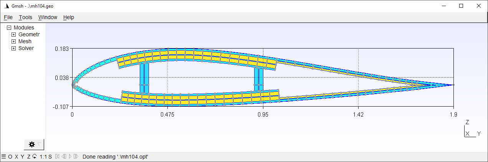
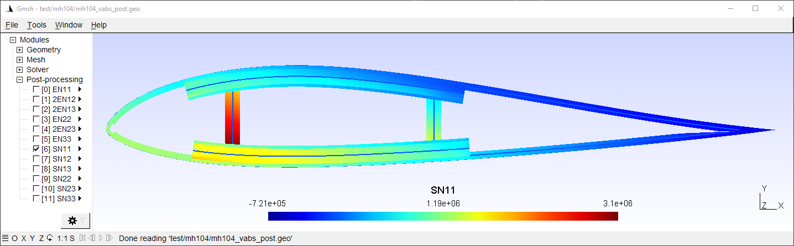

How to Run PreVABS#
PreVABS is a command line based program which acts as a general-purpose preprocessor and postprocessor based on parametric inputs necessary for designing a cross section.
The example input files referenced below are bundled in the share/examples/ folder of the PreVABS distribution.
Quick start#
If you have already added the folder where you stored VABS, Gmsh and PreVABS to the system or user environment variable PATH, to execute PreVABS, you can open any command line tool (Command Prompt or PowerShell on Windows, Terminal on Linux), change directory to the root of the PreVABS package, and type the following command:
On Windows:#
prevabs -i examples\ex_airfoil\mh104.xml --hm -v
On Linux:#
prevabs -i examples/ex_airfoil/mh104.xml --hm -v
The first option -i indicates the path and name for the cross section file (ex_airfoil/mh104.xml for this case).
--hm (or --homogenization) requests homogenization, where the meshed cross section is built and a VABS/SwiftComp input file is generated.
-v (or --visualize) opens Gmsh to visualize the meshed cross section.
PreVABS will read the parametric input files and generate the meshed cross section.
Once finished, PreVABS will invoke Gmsh, a tool for visualization, to show the cross section with the corresponding meshes

Three files are generated in the same location at this moment: a VABS/SwiftComp input file mh104.sg, a Gmsh geometry file mh104.geo_unrolled, a Gmsh mesh file mh104.msh, and a Gmsh option file mh104.opt.
The geometry file is used to inspect errors when meshing cannot be accomplished.
The latter three files are generated only when visualization is needed.
Then user can run VABS using the generated input file.
[!NOTE] PreVABS and Gmsh are free and open source. You can make changes to the code. However, VABS is a commercial code and you need to request the code and a valid license from AnalySwift.
Command line options#
PreVABS is executed using command prevabs.
The required arguments are an input file (-i) and exactly one analysis mode flag.
prevabs -i <main_input_file_name.xml> <mode> [options]
Required arguments#
Option |
Description |
|---|---|
|
Input file (required) |
Analysis mode (one required) |
|
|
Homogenization (cross-sectional properties) |
|
Dehomogenization / recovery |
|
Initial failure index and strength ratio |
|
Initial failure strength (SwiftComp only) |
|
Initial failure envelope (SwiftComp only) |
Solver selection (default: VABS)#
Option |
Description |
|---|---|
|
Use VABS format (default) |
|
Use SwiftComp format |
Execution and visualization#
Option |
Description |
|---|---|
|
Run VABS/SwiftComp after generating the input |
|
Use the integrated VABS solver (implies |
|
Visualize the meshed cross section, or contour plots after recovery |
|
Do not open the Gmsh GUI window; geo/msh files are still written when |
|
Gmsh log verbosity (0=silent, 1=errors, 2=warnings, 3=info, 5=debug; default 2) |
|
Tool version (e.g. |
|
Debug mode |
Running cases#
Some possible use cases are given below.
Case 1: Build cross section from parametric input files#
prevabs -i <cross_section_file_name.xml> --hm -v
In this case, parametric input files are prepared for the first time, and one may want to check the correctness of these files and whether the cross section can be built as designed. One may also want to try different meshing sizes before running the analysis.
Case 2: Carry out homogenization without visualization#
prevabs -i <cross_section_file_name.xml> --hm -e
The command will build the cross section model, generate the input, and run VABS to calculate the cross-sectional properties, without seeing the plot, since visualization needs extra computing time and resources.
One can also make modifications to the design (change the parametric inputs) and do this step repeatedly.
If you already have generated the input file cross_section.sg, and want to only run VABS, you can invoke VABS directly using VABS cross_section.sg.
Since PreVABS 1.4 and VABS version 4.0, a dynamic link library of VABS is provided. Users can run the cross-sectional analysis using the library instead of the standalone executable file. This will remove the time cost by writing and reading the VABS input file, and reducing the total running time. The command is:
prevabs -i <cross_section_file_name.xml> --hm --vabs --integrated
Case 3: Recover 3D stress/strain and plot#
prevabs -i <cross_section_file_name.xml> --dh -e -v
After getting the results from a 1D beam analysis, one may want to find the local strains and stresses of a cross section at some location along the beam. This command will let PreVABS read those results, update the VABS input file, carry out recovery analysis, and finally draw contour plots in Gmsh

An example of the recover analysis can be found here.
[!NOTE] Before any recovery run, a homogenization (with
--hm) run must be carried out first for the same cross section file. In other words, the file<cross_section>.sg.optmust be generated before the recovery run. Besides, results from the 1D beam analysis need to be added into the<cross_section>.xmlfile. Preparation of this part of data is explained in Section: Specifications for recovery.
Plotted data are the nodal strains and stresses in the global coordinate system.